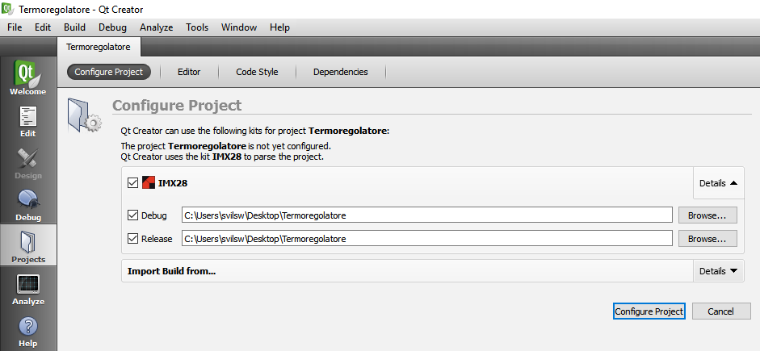

Renommer un projet
Pour renommer le dossier de projet créé avec QtCreator, vous devez suivre les étapes suivantes:
Assurez-vous que vous avez fermé le projet que vous souhaitez renommer.
Renommez le dossier du projet (n'insérez pas de caractères spéciaux (sauf _) ni d'espaces.
Supprimez le fichier avec l'extension “.pro.user” du dossier du projet.
Renommez le fichier avec l'extension “.pro” avec le nom que vous avez choisi à l'étape 2.
Renommez le fichier avec l'extension “.pro.shared” avec le nom que vous avez choisi à l'étape 2.
Ouvrez le nouveau projet depuis QtCreator.
Lorsque l'image suivante apparaît, appuyez sur le bouton “Configure Project”.

Effectuez un “Run qmake” et un “Clean All”, voyez le chapitre “Erreurs de compilation”
Faites le “Build” du projet.
Définissez les paramètres d'envoi du projet à l'appareil:
Désactivez, sous la rubrique “Upload files via SFTP”, le flag “Incremental deployment”;


Écrivez “stop” (en minuscule) et déplacez le bloc “Run custom remote command” d'une position vers le haut, à l'aide de la flèche surlignée en jaune (appuyez sur Details).

Le résultat final doit être comme suit: